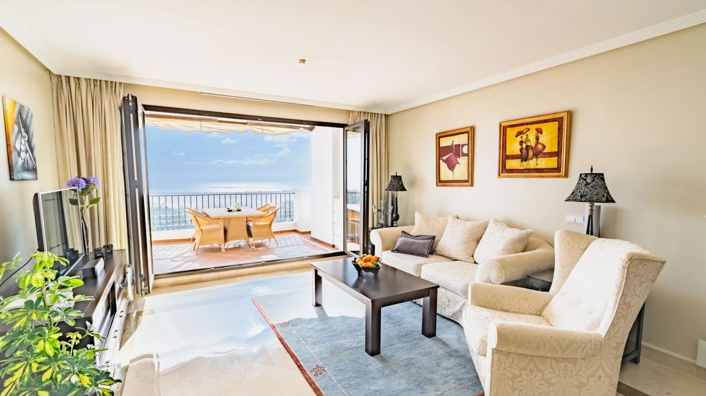
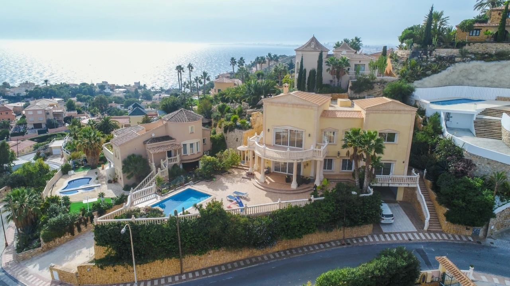
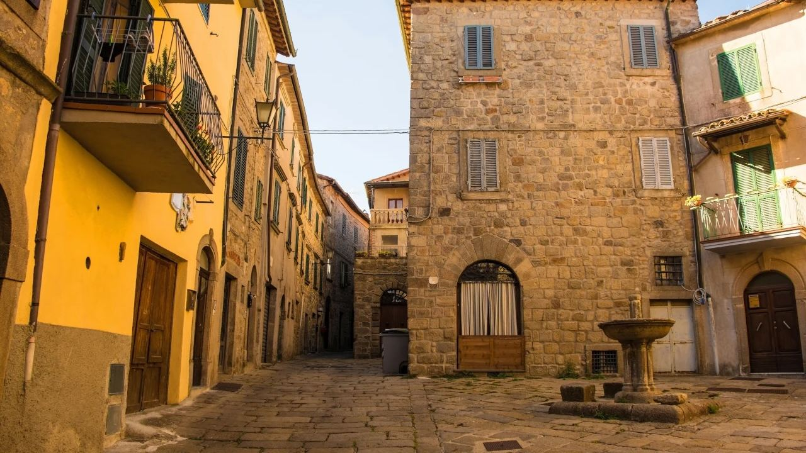

Buying · Comparison
Spain or Italy: Which Is Better for Buying a Home?
 By Aleksandra Kobus · · updated · 4 min read
By Aleksandra Kobus · · updated · 4 min read

In short: Both countries use the euro, have good public healthcare and beautiful coasts. Spain usually wins for buyers who want a modern, ready-to-use home by the sea with sun all year: its coasts have far more new builds, the buying process is quick and the agent's fee is normally paid by the seller. Italy wins on historic towns and countryside and can be cheaper inland, but many homes need renovation, the buyer usually pays part of the agent's fee and winters are colder outside the far south. Buying costs are similar, roughly 10 to 15% of the price in both countries.
Spain and Italy are the two dream destinations for a home on the Mediterranean. Both are beautiful, but they suit different buyers. Here is a fair comparison of costs, homes and daily life to help you decide.
At a glance
| Spain (coast) | Italy | |
|---|---|---|
| Tax on resale purchase | Transfer tax on the price: 9% Valencian Community, 7% Andalusia | Registration tax 9% of the cadastral value (second home) |
| Tax on new build | 10% VAT + 1.2–1.4% stamp duty | 10% VAT for a second home |
| Agent's fee | Usually paid by the seller | Buyer usually pays 2–4% + VAT |
| Annual property tax | IBI, usually a few hundred euros a year | IMU on second homes, often higher |
| Homes on offer | Many new builds and modern villas | More historic and older homes |
| Winter on the coast | Mild, about 16–18 °C by day | Mild in the south, cooler in the north |
| Main airports for the coast | Alicante, Málaga, Valencia, Murcia | Spread across the country |
Figures for 2026. Taxes change, so check them before you buy.
Buying costs and taxes

The total cost of buying is similar in both countries, about 10 to 15% on top of the price, but it is made up differently.
- Spain: on a resale home you pay transfer tax on the price (9% in the Valencian Community, 11% above €1 million, 7% in Andalusia). On a new build you pay 10% VAT plus stamp duty. On the coast the agent's commission is normally included in the price and paid by the seller.
- Italy: on a resale second home you pay 9% registration tax, but on the cadastral value, which is often well below the price. In return, the buyer usually pays the agent 2 to 4% plus VAT, and notary fees are higher.
Every year you pay local property tax in both countries. Spanish IBI is usually lower than Italian IMU on a second home. See IBI property tax and how to buy in Spain.
The homes on offer

This is the biggest difference. The Spanish coast has built a lot in the last twenty years, and new developments are still being added. You can choose a new apartment with a pool and sea view or a modern villa, ready to move in and with warranties. See buying a new build in Spain.
Italy has a smaller new-build market. Many homes for sale are older: farmhouses, town houses and historic villas full of character. They can be cheaper, especially inland and in the south, but renovation is often needed and costly. In the most famous places, such as Lake Como, the Amalfi Coast or Costa Smeralda, prices are very high.
Climate and daily life

- Climate: the Costa Blanca and Costa del Sol have over 300 sunny days a year and mild winters, so you can live there all year. In Italy only the far south and the islands are as mild; Tuscany and the north are cold and wet in winter.
- International life: the Spanish coast has large international communities, English is widely spoken and services for foreign owners are everywhere. Italy feels more local, which many buyers love, but you need Italian sooner.
- Healthcare: both countries have good public healthcare and private clinics. On the Spanish coast many doctors speak English.
- Cost of living: similar, with Spain often slightly cheaper for eating out and services. See cost of living in Spain.
Renting out
Both countries now regulate holiday letting closely. In Spain each region runs its own tourist-licence register (the Supreme Court annulled the national register in May 2026), and Italy requires a national ID code (CIN) for every holiday let. In Spain non-residents pay tax on rental income at 19% (EU and EEA residents, with costs deductible) or 24%. Spanish coastal resorts have demand almost all year, which helps returns. See short-term rental rules.
Which one suits you?
- Choose Spain if you want a modern home by the sea, sun in winter, many direct flights, an easy process and a property that is easy to rent or resell.
- Choose Italy if you dream of a historic house, a hill town or the countryside, are happy to renovate and spend time there mostly in spring and summer.
Many of our clients considered both and chose Spain for the practical side. If you are still deciding, compare the Spanish coasts in Costa Blanca or Costa del Sol.
Frequently asked questions
Is it cheaper to buy in Spain or Italy?
Average prices are not much lower in Spain, and inland Italy can be cheaper. On the coast, Spain offers more modern homes for the money, and the agent's fee is usually paid by the seller.
What are the buying costs in Spain and Italy?
In both countries about 10 to 15% of the price. Spain charges transfer tax on the price or 10% VAT on new builds; Italy charges 9% registration tax on the cadastral value of a second home, and the buyer usually pays part of the agent's fee.
Which country has better weather in winter?
The Spanish Costa Blanca and Costa del Sol have milder, sunnier winters than most of Italy. Only southern Italy and the islands are comparable.
Can foreigners buy property freely in Spain and Italy?
In Spain anyone can buy with an NIE number. In Italy EU citizens can buy freely and most other nationalities can too, under reciprocity rules.
Is it easier to rent out a home in Spain or Italy?
Both regulate holiday lets. Spanish coastal resorts have demand for most of the year, which often makes renting easier.
Looking at Spain? Talk to us
If Spain is on your list, we can show you homes on the Costa del Sol and the Costa Blanca, explain the costs for your situation and arrange viewings. Contact us.
Sources: idealista.it – How much does it cost to buy property in Italy (2026) · BOE – Non-residents income tax law (RDL 5/2004)